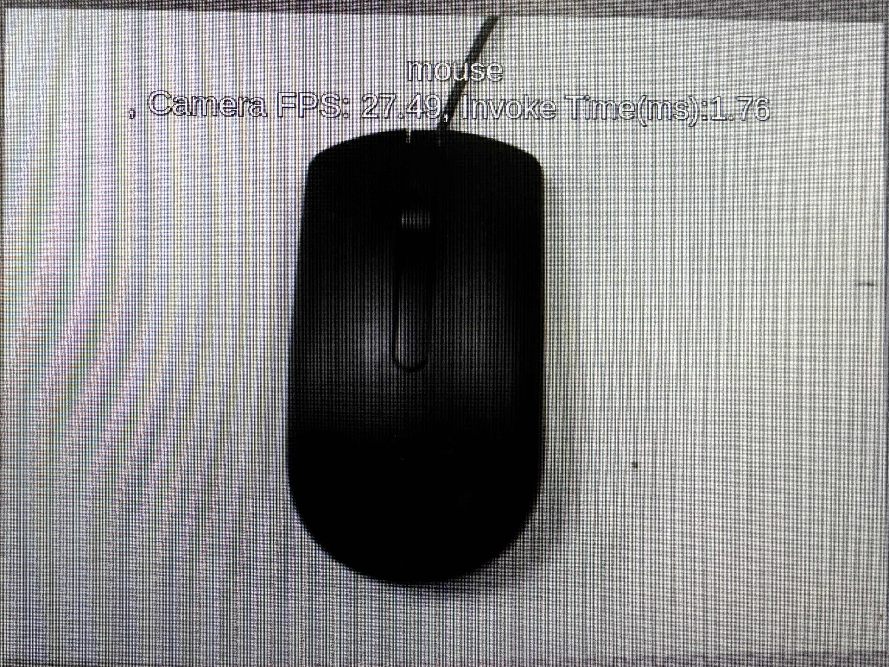
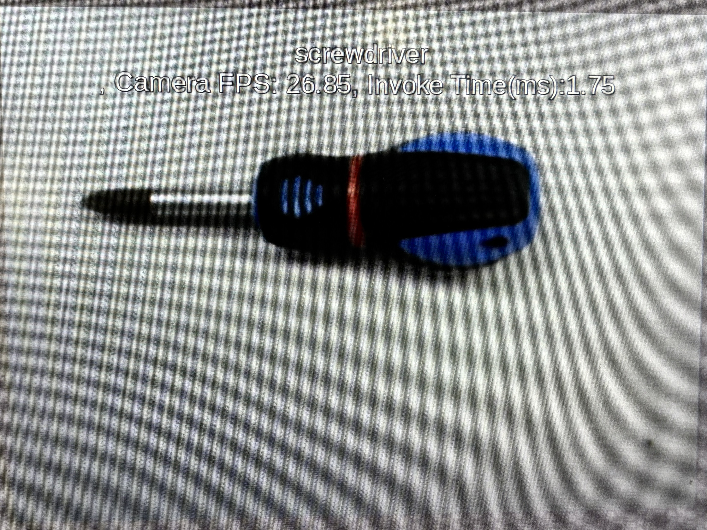
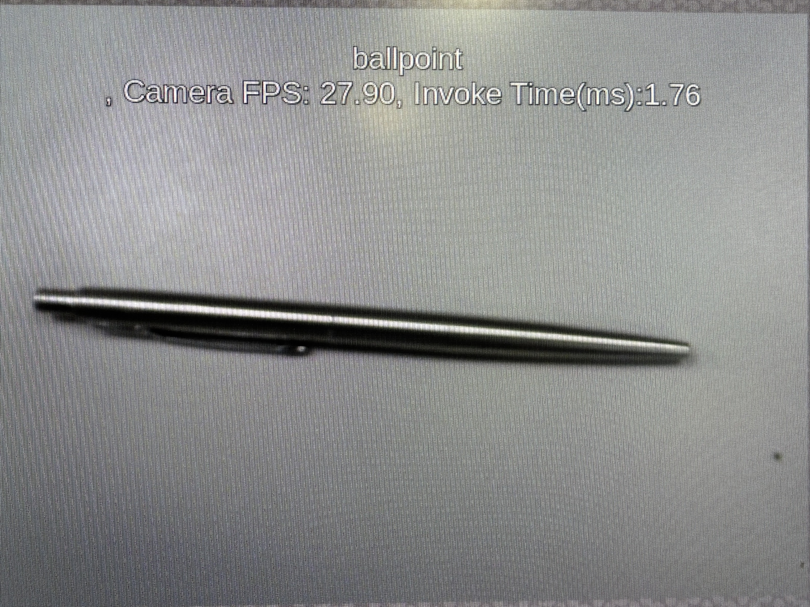
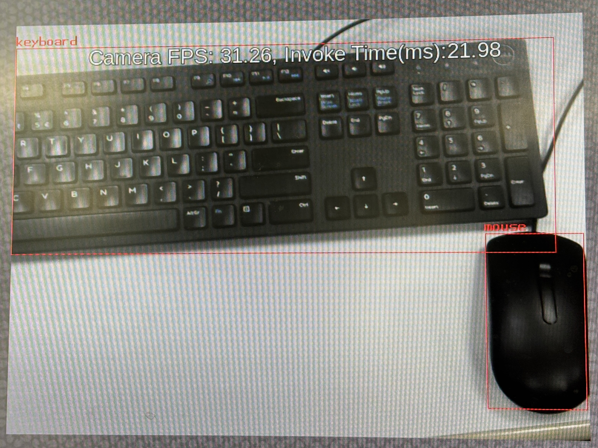
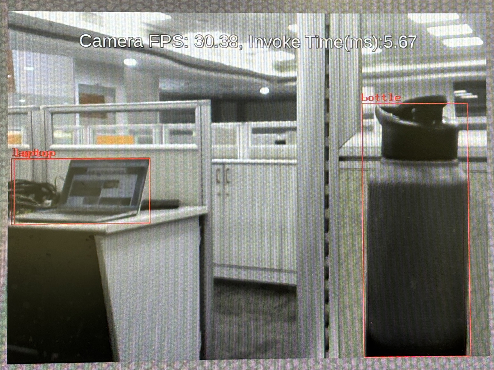
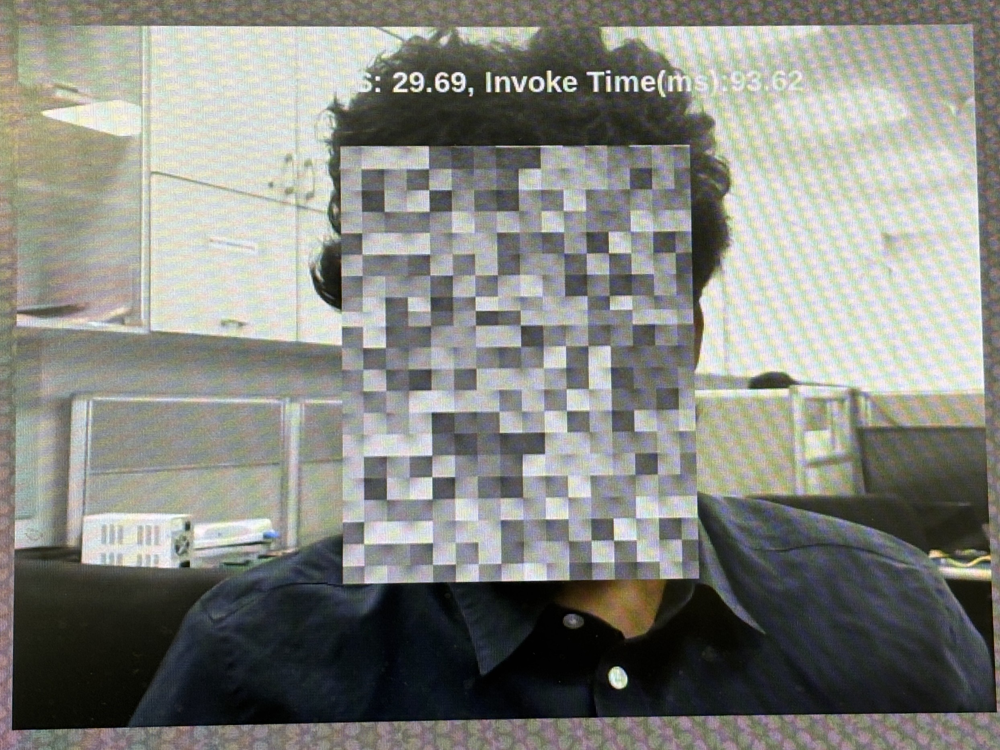
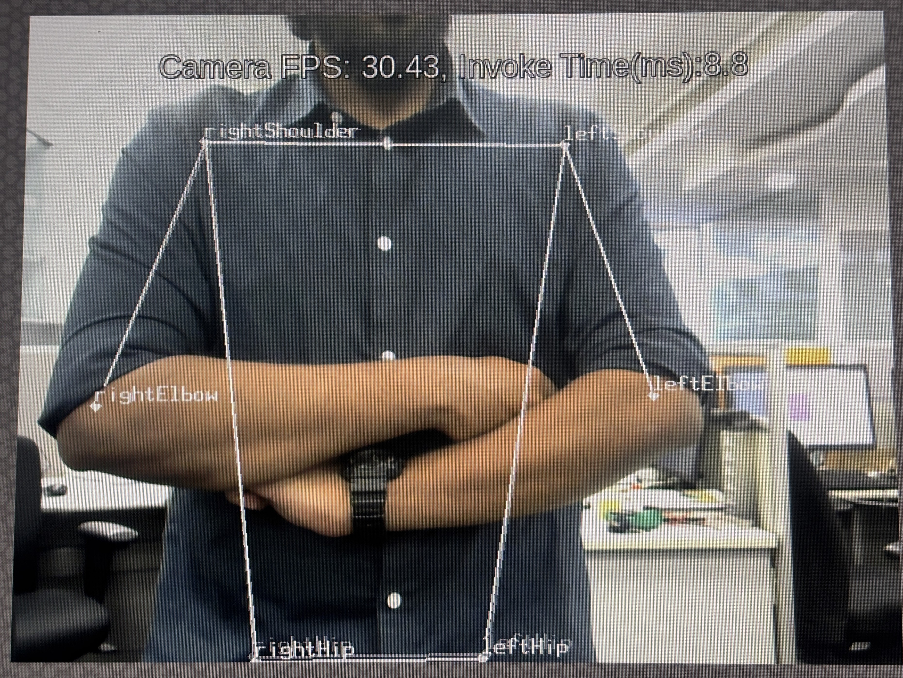
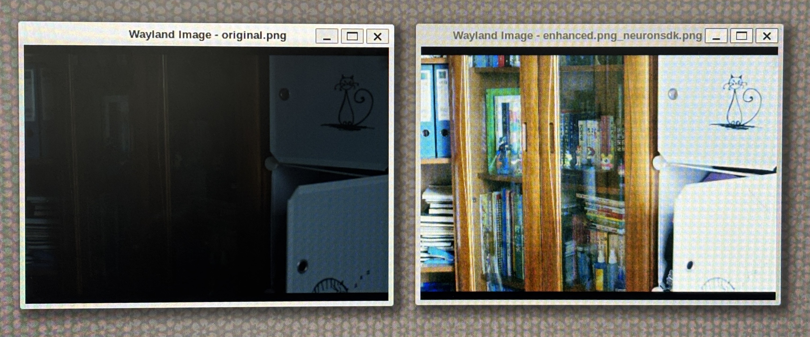
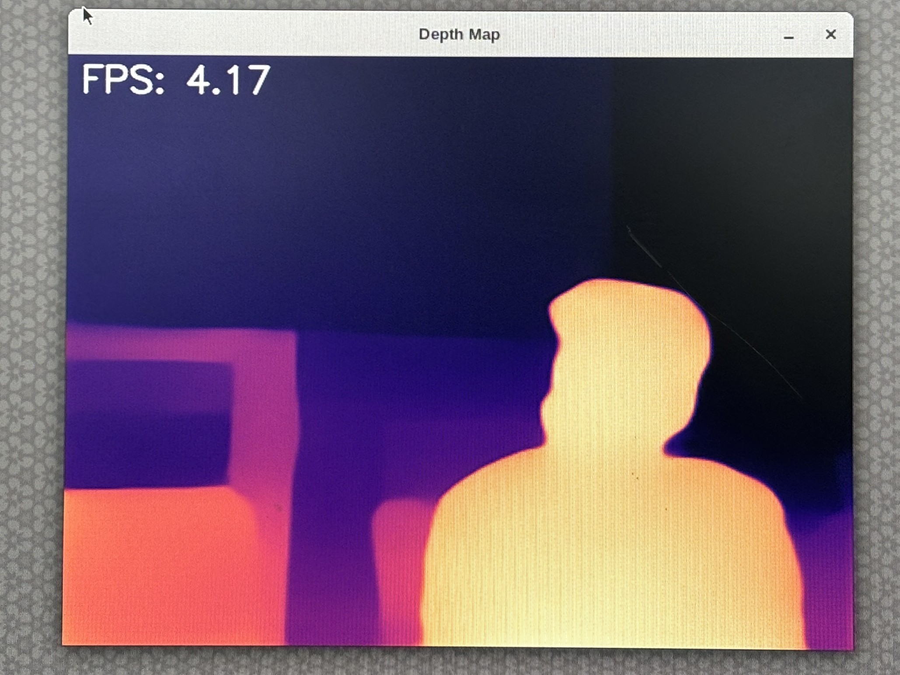

AI InferencingThis guide walks through all available AI demo applications and benchmarking tools included in the Yocto BSP for the OSM-MTK510. All live demos use NNStreamer as the inference pipeline framework, with a UVC USB webcam as input. PrerequisitesHardware OSM-MTK510 powered on and accessible via serial console (UART) HDMI/DP display connected UVC USB webcam connected (required for all demos except Low Light Image Enhancement) Identify Your Camera NodeBefore running any live demo, identify the correct camera device node: v4l2-ctl --list-devices Look for your UVC camera in the output: UVC Camera (046d:081b) (usb-11200000.xhci1-1.7): /dev/video5 /dev/video6 Use the first node listed. In this example /dev/video5, which corresponds to camera ID 5. Use v4l2-ctl --device=/dev/video5 --list-formats-ext to verify supported resolutions. Inference BackendsThe OSM-MTK510 supports multiple inference backends. All are pre-installed in the BSP. Backend --engine --framework Description CPU (TFLite) cpu tflite Default, software inference using all CPU cores ArmNN (GPU) armnn tflite ArmNN delegate using Mali GPU acceleration NPU Stable Delegate stable_delegate tflite NPU acceleration via TFLite stable delegate NPU NeuronSDK — neuronsdk Compiles .tflite to .dla and runs directly on NPU Note: On first run, neuronsdk framework compiles the model to a .dla file which may take a few extra seconds. Subsequent runs use the cached .dla file. Tip: Add --performance 1 to any command to lock CPU, GPU, and APU to maximum clock speeds for consistent and optimal performance. Demo ApplicationsAll demos are located at /usr/bin/nnstreamer-demo/ and are launched via a common runner script: python3 /usr/bin/nnstreamer-demo/run_nnstreamer_example.py --app <app_name> --cam_type uvc [OPTIONS] Common Arguments Argument Default Description --app image_classification Demo app to run --engine cpu Inference backend: cpu, armnn, stable_delegate --framework tflite Inference framework: tflite, neuronsdk --cam 0 Camera node ID (e.g. 5 for /dev/video5) --cam_type (required) Camera type: uvc, yuvsensor, rawsensor --width 640 Video display width in pixels --height 480 Video display height in pixels --fullscreen 0 Set 1 to enable fullscreen output --throughput 0 Set 1 to display FPS and inference time on screen --performance 0 Set 1 to enable performance mode (max clocks) --rot 0 Rotate camera image by degrees (e.g. 90) --img — Input image path (Low Light Enhancement only) --export — Output image path (Low Light Enhancement only) 1. Image ClassificationClassifies the main subject in the camera frame in real time using MobileNet V1.    Model: mobilenet_v1_1.0_224_quant.tflite Input: 224×224 RGB (resized from camera feed) Output: Top-1 class label overlaid on the display Run (CPU): python3 /usr/bin/nnstreamer-demo/run_nnstreamer_example.py \ --app image_classification \ --cam_type uvc \ --cam 5 \ --throughput 1 Run (NPU - stable delegate): python3 /usr/bin/nnstreamer-demo/run_nnstreamer_example.py \ --app image_classification \ --cam_type uvc \ --cam 5 \ --engine stable_delegate \ --throughput 1 Run (NPU - NeuronSDK): python3 /usr/bin/nnstreamer-demo/run_nnstreamer_example.py \ --app image_classification \ --cam_type uvc \ --cam 5 \ --framework neuronsdk \ --throughput 1 Run (ArmNN GPU): python3 /usr/bin/nnstreamer-demo/run_nnstreamer_example.py \ --app image_classification \ --cam_type uvc \ --cam 5 \ --engine armnn \ --throughput 1 Benchmark Results: Backend Avg FPS Avg Invoke Time vs CPU CPU ~28.9 16.6 ms baseline NPU stable_delegate ~27.4 1.76 ms 9.4x faster NPU NeuronSDK ~29.5 2.42 ms 6.9x faster ArmNN GPU ~29.7 38.3 ms 2.3x slower 2. Object Detection (SSD MobileNet V2)Detects and draws bounding boxes around multiple objects simultaneously using SSD MobileNet V2 trained on the COCO dataset (80 object classes).  Model: ssd_mobilenet_v2_coco.tflite Input: 300×300 RGB Output: Bounding boxes with class labels overlaid on the display Run (CPU): python3 /usr/bin/nnstreamer-demo/run_nnstreamer_example.py \ --app object_detection \ --cam_type uvc \ --cam 5 \ --throughput 1 Run (NPU - stable delegate): python3 /usr/bin/nnstreamer-demo/run_nnstreamer_example.py \ --app object_detection \ --cam_type uvc \ --cam 5 \ --engine stable_delegate \ --throughput 1 Run (NPU - NeuronSDK): python3 /usr/bin/nnstreamer-demo/run_nnstreamer_example.py \ --app object_detection \ --cam_type uvc \ --cam 5 \ --framework neuronsdk \ --throughput 1 Run (ArmNN GPU): python3 /usr/bin/nnstreamer-demo/run_nnstreamer_example.py \ --app object_detection \ --cam_type uvc \ --cam 5 \ --engine armnn \ --throughput 1 Benchmark Results: Backend Avg FPS Avg Invoke Time vs CPU CPU ~30.4 160.9 ms baseline NPU stable_delegate ~31.3 21.98 ms 7.3x faster NPU NeuronSDK ~30.2 22.83 ms 7.0x faster ArmNN GPU ~31.3 112.07 ms 1.4x slower 3. Object Detection (YOLOv5)Detects objects and draws bounding boxes around multiple objects simultaneously using the YOLOv5s model quantized to INT8. Provides improved detection density compared to SSD across 80 COCO object classes.  Model: yolov5s-int8.tflite Input: 320×320 RGB Output: Bounding boxes with class labels overlaid on the display Note: NNAPI is not supported for this demo. Run (CPU): python3 /usr/bin/nnstreamer-demo/run_nnstreamer_example.py \ --app object_detection_yolov5 \ --cam_type uvc \ --cam 5 \ --throughput 1 Run (NPU - stable delegate): python3 /usr/bin/nnstreamer-demo/run_nnstreamer_example.py \ --app object_detection_yolov5 \ --cam_type uvc \ --cam 5 \ --engine stable_delegate \ --throughput 1 Run (NPU - NeuronSDK): python3 /usr/bin/nnstreamer-demo/run_nnstreamer_example.py \ --app object_detection_yolov5 \ --cam_type uvc \ --cam 5 \ --framework neuronsdk \ --throughput 1 Run (ArmNN GPU): python3 /usr/bin/nnstreamer-demo/run_nnstreamer_example.py \ --app object_detection_yolov5 \ --cam_type uvc \ --cam 5 \ --engine armnn \ --throughput 1 Benchmark Results: Backend Avg FPS Avg Invoke Time vs CPU CPU ~30.2 45.11 ms baseline NPU stable_delegate ~30.4 5.67 ms 7.9x faster NPU NeuronSDK ~30.3 6.38 ms 7.1x faster ArmNN GPU ~36.2 87.17 ms 1.9x slower 4. Face DetectionDetects human faces in real-time using the NPU and applies a mosaic pixelation effect over each detected face.  Model: detect_face.tflite Input: Live camera feed Output: Bounding boxes around detected faces overlaid on the display Run (CPU): python3 /usr/bin/nnstreamer-demo/run_nnstreamer_example.py \ --app face_detection \ --cam_type uvc \ --cam 5 \ --throughput 1 Run (NPU - stable delegate): python3 /usr/bin/nnstreamer-demo/run_nnstreamer_example.py \ --app face_detection \ --cam_type uvc \ --cam 5 \ --engine stable_delegate \ --throughput 1 Run (NPU - NeuronSDK): python3 /usr/bin/nnstreamer-demo/run_nnstreamer_example.py \ --app face_detection \ --cam_type uvc \ --cam 5 \ --framework neuronsdk \ --throughput 1 Run (ArmNN GPU): python3 /usr/bin/nnstreamer-demo/run_nnstreamer_example.py \ --app face_detection \ --cam_type uvc \ --cam 5 \ --engine armnn \ --throughput 1 Benchmark Results: Backend Avg FPS Avg Invoke Time vs CPU CPU ~29.4 73.99 ms baseline NPU stable_delegate ~29.7 11.3 ms 6.5x faster NPU NeuronSDK ~29.7 12.83 ms 5.8x faster ArmNN GPU ~29.7 93.62 ms 1.3x slower 5. Pose EstimationEstimates human body pose by detecting 17 key body joints using PoseNet, and draws a skeleton overlay connecting the joints.  Model: posenet_mobilenet_v1_100_257x257_multi_kpt_stripped.tflite Input: 257×257 RGB Output: Skeleton overlay with joint connections drawn on the display Note: NNAPI is not supported for this demo. Run (CPU): python3 /usr/bin/nnstreamer-demo/run_nnstreamer_example.py \ --app pose_estimation \ --cam_type uvc \ --cam 5 \ --throughput 1 Run (NPU - stable delegate): python3 /usr/bin/nnstreamer-demo/run_nnstreamer_example.py \ --app pose_estimation \ --cam_type uvc \ --cam 5 \ --engine stable_delegate \ --throughput 1 Run (NPU - NeuronSDK): python3 /usr/bin/nnstreamer-demo/run_nnstreamer_example.py \ --app pose_estimation \ --cam_type uvc \ --cam 5 \ --framework neuronsdk \ --throughput 1 Run (ArmNN GPU): python3 /usr/bin/nnstreamer-demo/run_nnstreamer_example.py \ --app pose_estimation \ --cam_type uvc \ --cam 5 \ --engine armnn \ --throughput 1 Benchmark Results: Backend Avg FPS Avg Invoke Time vs CPU CPU ~30.2 39.7 ms baseline NPU stable_delegate ~31.4 7.2 ms 5.5x faster NPU NeuronSDK ~30.3 8.58 ms 4.6x faster ArmNN GPU ~30.4 77.04 ms 1.9x slower 6. Low Light Image EnhancementEnhances a dark or underexposed PNG image using the Zero-DCE model. Unlike other demos, this works on a static image file rather than a live camera feed, and saves the enhanced result as a PNG file.  Model: lite-model_zero-dce_1.tflite Input: PNG image file - a sample original.png is included in the demo directory Output: Enhanced PNG file saved to the path specified by --export Fixed input size: 600×400 pixels Important: This demo must be run with the Weston compositor stopped to avoid GPU memory pressure causing the process to be killed. Stop Weston before running and restart it afterwards. Stop Weston before running: killall weston Run (CPU): python3 /usr/bin/nnstreamer-demo/run_nnstreamer_example.py \ --app low_light_image_enhancement \ --cam_type uvc \ --img /usr/bin/nnstreamer-demo/original.png \ --export /home/root/enhanced_cpu.png \ --width 600 \ --height 400 \ --throughput 1 Run (NPU - stable delegate): python3 /usr/bin/nnstreamer-demo/run_nnstreamer_example.py \ --app low_light_image_enhancement \ --cam_type uvc \ --img /usr/bin/nnstreamer-demo/original.png \ --export /home/root/enhanced_npu.png \ --width 600 \ --height 400 \ --engine stable_delegate \ --throughput 1 Run (NPU - NeuronSDK): python3 /usr/bin/nnstreamer-demo/run_nnstreamer_example.py \ --app low_light_image_enhancement \ --cam_type uvc \ --img /usr/bin/nnstreamer-demo/original.png \ --export /home/root/enhanced_neuronsdk.png \ --width 600 \ --height 400 \ --framework neuronsdk \ --throughput 1 Restart Weston after running: weston --backend=drm-backend.so & View original vs enhanced images side by side: weston-image /usr/bin/nnstreamer-demo/original.png &weston-image /home/root/enhanced_neuronsdk.png_neuronsdk.png & Benchmark Results: Backend Invoke Time vs CPU Notes CPU 1243.78 ms baseline NPU stable_delegate 248.08 ms 5.0x faster NPU NeuronSDK 101.76 ms 12.2x faster ArmNN GPU 656.60 ms 1.9x slower SQUARE op unsupported - partial CPU fallback 7. Monocular Depth EstimationEstimates per-pixel depth from a single camera frame using the MiDaS model. The output is a false-colour depth map, warmer colours (yellow/white) indicate closer objects, cooler colours (purple/black) indicate farther objects.  Model: midas.tflite Input: 256×256 RGB (resized from 640×480 camera feed) Output: False-colour depth map rendered via OpenCV window on the display Press q to quit the demo Run (CPU): python3 /usr/bin/nnstreamer-demo/run_nnstreamer_example.py \ --app monocular_depth_estimation \ --cam_type uvc \ --cam 5 \ --throughput 1 Run (NPU - stable delegate): python3 /usr/bin/nnstreamer-demo/run_nnstreamer_example.py \ --app monocular_depth_estimation \ --cam_type uvc \ --cam 5 \ --engine stable_delegate \ --throughput 1 Run (NPU - NeuronSDK): python3 /usr/bin/nnstreamer-demo/run_nnstreamer_example.py \ --app monocular_depth_estimation \ --cam_type uvc \ --cam 5 \ --framework neuronsdk \ --throughput 1 Run (ArmNN GPU): python3 /usr/bin/nnstreamer-demo/run_nnstreamer_example.py \ --app monocular_depth_estimation \ --cam_type uvc \ --cam 5 \ --engine armnn \ --throughput 1 Benchmark Results: Backend Avg FPS vs CPU CPU ~4.17 baseline NPU stable_delegate ~22.53 5.4x faster NPU NeuronSDK ~22.69 5.4x faster ArmNN GPU ~5.54 1.3x faster BenchmarkingNPU DLA Benchmark (benchmark.py)This tool compiles a .tflite model to a .dla file for the NPU and measures average inference time across multiple runs using neuronrt. Location: /usr/share/benchmark_dla/benchmark.py Available NPU targets on OSM-MTK510: Target Description mdla3.0 MediaTek Deep Learning Accelerator vpu Vector Processing Unit tflite_cpu Software fallback (TFLite CPU) Benchmark a single model on a specific target: python3 /usr/share/benchmark_dla/benchmark.py \ --file /usr/bin/nnstreamer-demo/mobilenet_v1_1.0_224_quant.tflite \ --target mdla3.0 \ --count 100 Auto-benchmark all .tflite models in the current directory across all targets: cd /usr/bin/nnstreamer-demo/python3 /usr/share/benchmark_dla/benchmark.py --auto --count 100 Stress test (retains compiled .dla files after run): python3 /usr/share/benchmark_dla/benchmark.py --stress --count 100 NPU DLA Benchmark Results (100 inference runs): Model MDLA 3.0 VPU MobileNet V1 quant (Image Classification) 1.29 ms 13.51 ms SSD MobileNet V2 (Object Detection) 21.76 ms ❌ Not supported YOLOv5s INT8 (Object Detection) 5.4 ms ❌ Not supported Face Detection 11.59 ms ❌ Not supported PoseNet MobileNet V1 (Pose Estimation) 7.49 ms ❌ Not supported MiDaS (Depth Estimation) 22.25 ms ❌ Not supported Zero-DCE (Low Light Enhancement) 99.06 ms ❌ Not supported Note: The VPU target only supports models with a limited set of operations. MobileNet V1 is the only BSP model that compiles successfully for VPU. All other models must use MDLA 3.0. TFLite Benchmark ModelBenchmarks .tflite models directly using the TFLite benchmark binary, automatically detecting and testing all available delegates (CPU, GPU, NNAPI). Location: /home/root/benchmark_suite/benchmark_model/ cd /home/root/benchmark_suite/benchmark_model/./run.sh Results: Model CPU GPU MobileNet V2 Float 24.42 ms 23.16 ms MobileNet V2 Quant 34.38 ms 24.60 ms